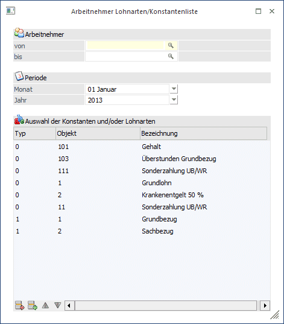
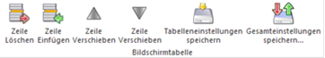
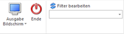
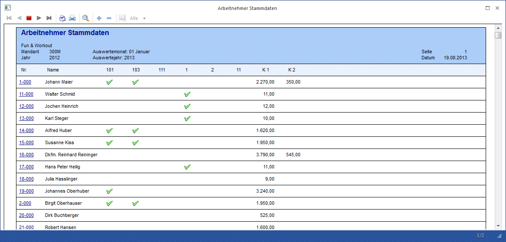
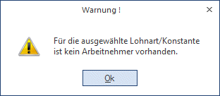

Über den Menüpunkt
1 Auswertungen
1 Stammdatenauswertungen
1 Arbeitnehmerstamm
1 Lohnarten/Konstantenliste
kann eine Liste aller beim AN hinterlegter Lohnarten und/oder Konstanten ausgegeben werden, wobei frei definierbar ist, welche Lohnarten und/oder Konstanten angedruckt werden sollen.

Einschränkungen - Einstellungen
Ø Arbeitnehmer von - bis
Hier können die AN eingeschränkt werden, für die die Auswertung durchgeführt werden soll. Wie die AN-Nummer eingegeben werden kann, dazu gibt es mehrere Möglichkeiten. Details dazu entnehmen Sie bitte dem Kapitel Aufruf einer AN-Nummer. Weiterführende Einschränkungen können über den Filter vorgenommen werden. . Durch einen Klick auf den AN wird standardmäßig der AN-Stamm aufgerufen. Über die rechte Maustaste kann aber individuell eingestellt werden, welche Aktion ausgelöst werden soll. Dabei stehen folgende Optionen zur Verfügung:

ü Arbeitnehmerstamm
Es wird der
AN-Stamm aufgerufen, wobei gleich der Datensatz des angezeigten AN angezeigt
wird.
ü Arbeitnehmerinfo
Es wird die
Arbeitnehmerinfo im Programm WinLine INFO geöffnet.
ü Jahreslohnkonto
Es wird das
Steuerfenster für das Jahreslohnkonto aufgerufen, wo der ausgewählte AN gleich
vorgeschlagen wird. Die Ausgabe muss nur mehr durchgeführt werden.
ü Arbeitnehmer Stammblatt
Es wird
das Steuerfenster für das Arbeitnehmer Stammblatt aufgerufen, wo der ausgewählte
AN gleich vorgeschlagen wird. Die Ausgabe muss nur mehr durchgeführt werden.
ü Lohnerfassung A
Es wird die
Einzelabrechnung aufgerufen, wobei gleich alle Daten des ausgewählten AN
abgerufen werden. Bei diesen Punkt ist darauf zu achten, dass ggf. die
automatischen Lohnarten abgearbeitet werden.
Die zuletzt getätigte Einstellung wird als Standard übernommen, d.h. wenn das nächste Mal nur auf den AN-Namen geklickt wird, dann wird die letzte Aktion automatisch durchgeführt. Diese Einstellung wird pro Benutzer gespeichert.
Ø Monat
Anhand des Monats, das aus der Auswahllistbox ausgewählt werden kann, wird die Gültigkeit der Lohnart bzw. der Konstante bestimmt. D.h. in weiterer Folge werden nur die Werte angezeigt, die im ausgewählten Monat gültig sind.
Ø Jahr
Anhand des Jahres, das aus der Auswahllistbox ausgewählt werden kann, wird die Gültigkeit der Lohnart bzw. der Konstante bestimmt. D.h. in weiterer Folge werden nur die Werte angezeigt, die im ausgewählten Jahr (inkl. Berücksichtigung des Monats) gültig sind.
Auswahl der Konstanten und/oder Lohnarten
In der Tabelle können die Lohnarten und/oder Konstanten (max. 15 Einträge) hinterlegt werden, die auf der Liste ausgegeben werden sollen. Dabei stehen folgende Felder zur Verfügung:
Ø Typ
Aus der Auswahllistbox kann der Typ (0 = Lohnart, 1 = Konstante) gewählt werden, der in der Liste angedruckt werden soll.
Ø Objekt
Abhängig vom ausgewählten Typ kann hier die Lohnartennummer oder die Konstante eingetragen werden, die ausgewertet werden soll. Für beide Typen steht auch die Matchcodefunktion zur Verfügung, damit nach den jeweiligen Stammdaten gesucht werden kann.
Ø Bezeichnung
In dieser Spalte wird die Bezeichnung des ausgewählten Objektes angezeigt.
Buttons in der Tabelle

Ø Zeile Löschen
Durch Anklicken des Entfernen-Buttons können Einträge aus der Liste entfernt werden.
Ø Zeile Einfügen
Durch Anklicken des Einfügen-Buttons können neue Zeilen hinzugefügt werden, wobei die Zeile vor der aktuellen Zeile eingefügt wird.
Ø Zeile Verschieben
Mit den Buttons "Hinauf" und "Hinunter" kann die Reihenfolge der Objekte verändert werden.
Ø Tabelleneinstellungen speichern
Die Spalten einer Tabelle können grundsätzlich an beliebige Positionen verschoben, bzw. in der Breite entsprechend angepasst werden. Durch Anwahl des Buttons "Tabelleneinstellungen speichern" werden die Einstellungen benutzerspezifisch gespeichert und bei dem nächsten Aufruf des Programmpunktes wieder vorgeschlagen.
Ø Gesamteinstellungen speichern
Im Gegensatz zu "Tabelleneinstellungen speichern" können mit "Gesamteinstellungen speichern" mehrere Tabellenaufbauten gespeichert und nach Wunsch geladen werden. Zusätzlich werden Sonderfunktionen der Tabelle (z.B. "Spalte gruppieren") ebenfalls bei der Speicherung bedacht.
Buttons

Ø Ausgabe
Aus der Auswahllistbox kann gewählt werden, ob die Ausgabe am Bildschirm oder am Drucker durchgeführt werden soll. Standardmäßig wird die Ausgabe auf Bildschirm vorgeschlagen, die auch durch Drücken der F5-Taste gestartet werden kann.
Ø Ende
Durch Drücken der ESC-Taste wird das Fenster geschlossen.
Ø Filter
Durch Anklicken des Filter-Buttons kann eine erweiterte Selektion der AN vorgenommen werden, für die die Konstantenliste ausgewertet werden soll.
Ergebnis
In der Liste wird zuerst die AN-Nummer und dann der Name angedruckt. Durch einen Klick auf die AN-Nummer kann der AN-Stamm geöffnet werden. Es werden allerdings nur die AN angedruckt, auf die zumindest ein Selektionskriterium zutrifft. D.h. wenn z.B. die Konstante 7 ausgewählt wurde und ein AN hat keinen Wert in der Konstante 7, dann wird dieser auch nicht ausgedruckt.
In den Überschriften werden - je nach Einstellung - entweder die Lohnartennummer oder ein Kürzel für die Konstanten angezeigt. Im Fuß des Formulars werden dann die dazugehörigen Informationen (Lohnartenbezeichnung bzw. Bezeichnung der Konstante) angezeigt.
Wenn in der Definition eine Lohnart angegeben wurde, dann wird - wenn die Lohnart beim AN hinterlegt ist - ein grünes Häkchen angezeigt.
Wenn in der Definition eine Konstante angegeben wurde, dann wird - wenn die Konstante beim AN hinterlegt ist - der Wert der Konstante angezeigt.

Wurden in der Tabelle Selektionen eingegeben, für die es kein Ergebnis gibt (die Lohnart/Konstante ist bei keinem AN hinterlegt oder hat bei keinem AN eine Gültigkeit), dann wird vom Programm eine entsprechende Meldung ausgegeben:
